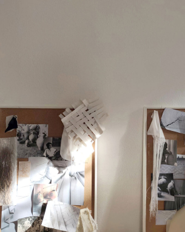
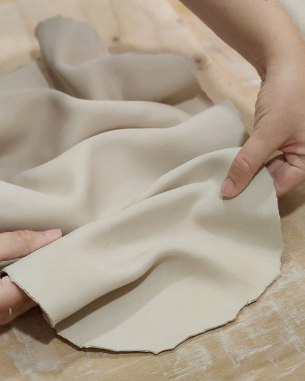
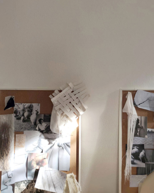
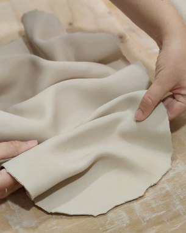

Contemporary craft and interiors with a mediterranean soul
 



I’m a Spanish artisan, designer and architect based in Italy. My work is based on the application of craftsmanship in objects and spaces design with a contemporary approach.
Influenced by the Mediterranean traditions and culture of my hometown – Valencia – my work develops around ceramics and textiles. Each creation is the result of the union between design and craftsmanship and emphasizes the beauty of handmade things and their imperfections.